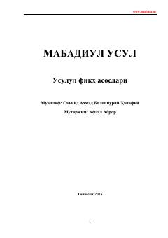

UFShar'iy dalillardan amaliy hukmlarni chiqarish qoidalari haqidagi risola.
Ushbu kitobda shar'iy dalillardan amaliy hukmlarni chiqarib olish qoidalari va usulul fiqh ilmining asoslari batafsil bayon qilingan. Asarda Qur'on, sunnash, ijmo' va qiyos kabi asosiy shar'iy dalillar hamda ularning turlari ilmiy asosda tushuntirilgan.